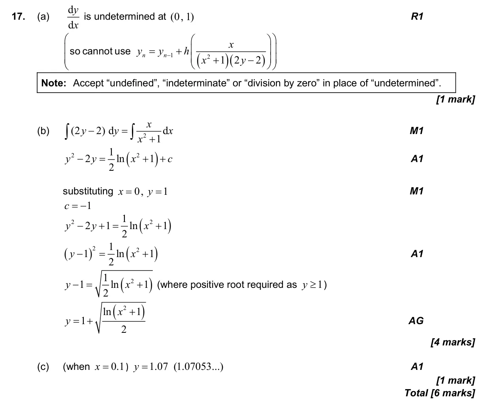

6 marks P1 TZ2 Calculator 5.14 Setting up differential equations and separating variables5.11 Further integration: standard integrals, inspection and substitution5.16 Euler's method for single and coupled first-order equations2.2 Functions, notation, domain, range and inverse as reflection Question Hide breakdown abc Markscheme 